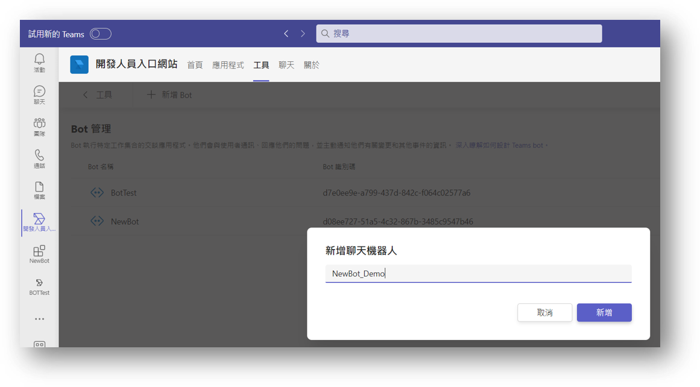
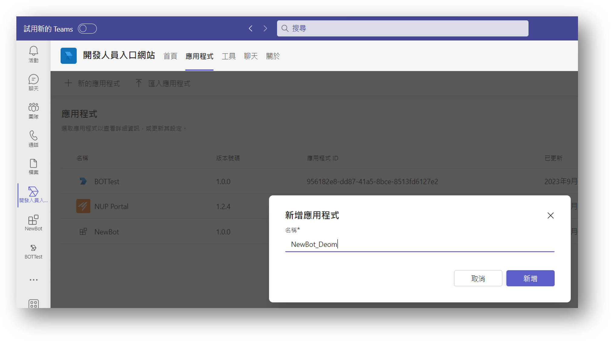
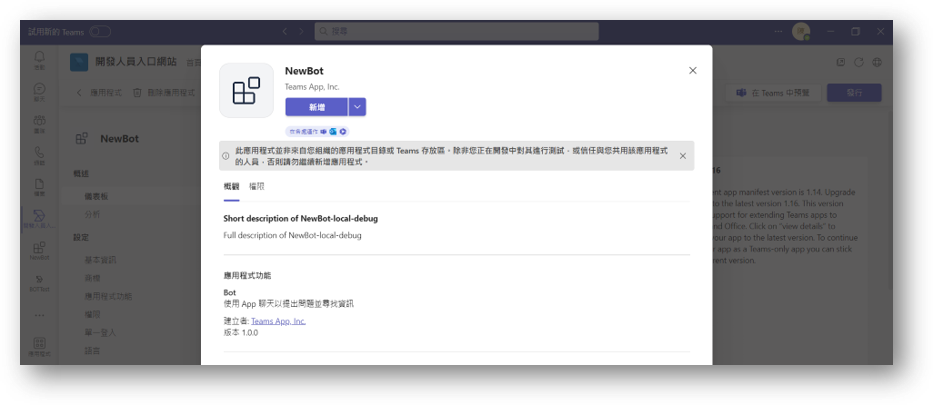

[筆記]用IIS部署.NET TeamsBot
前置準備
| 名稱 | 版本 | 備註 |
|---|---|---|
| IIS | 10 | Windows Server 2016以上 |
| SSL/TSL憑證 | Bot Endpoint，外網需要能打到 | |
| Aspnetcore-Runtime | 6 | |
| Dotnet-Hosting | 6 | |
| Dotnet-SDK | 6 | 開發者用 |
| Azure AD帳號 | 需要有Team開發權限 |
- IIS需要 Ver10才支援dotnet6的部署
- 因為推播需要透過微軟的API回傳到Bot的Server端，所以需要有對外的HTTPS Domain
- Aspnetcore-Runtime / Dotnet-Hosting 6 是部署在IIS需要的套件（IIS原生只支援到4）
- SDK為開發者開發時才需要用到
- Azure AD要有開發者權限才能測試部署Bot在Teams上做測試
建立Teams bot
有兩種選擇
A. 使用官方提供的Teams Tool用 Visual Studio開發
B. 自己手動建立BOT綁定Teams Bot
因為A.官方文件齊全及設定方式簡單這邊不介紹，先簡單說明手動建立的流程
- 建立Teams Bot，取得Azure的id與密碼
- 修改安裝包的設定檔
- 設定IIS站台
- 測試推播
建立Teams Bot
 使用Teams開發者工具選擇建立機器人，需要填入https的外部網址，並且預設使用5130 port/api/messages(官方範本設定) 建立好後記下金鑰跟Azure AD上應用程式註冊的識別碼(AD上的服務會自動建立)建立Teams App並綁定Bot
 在左側應用程式功能點選聊天機器人後選擇剛剛建立好的機器人，未來User加入APP就可以接收機器人的推播修改安裝包的設定檔
將appsetting.json的BOT_id and Bot_PASSWORD改成第一步驟所取得的值將整個BOT專案部署在IIS
確認站台已經安裝.NET6的hosting，並新增應用程式集區 .NET CLR版本選「沒有受控碼」
新增站台後分配5130port，若要更改要改code
建立好後需要將專案資料夾新增權限給IIS
- 將APP測試發布 測試帳號就可以加入APP 可以使用postman測試訊息是否正常發送 成功後再發布到組織內